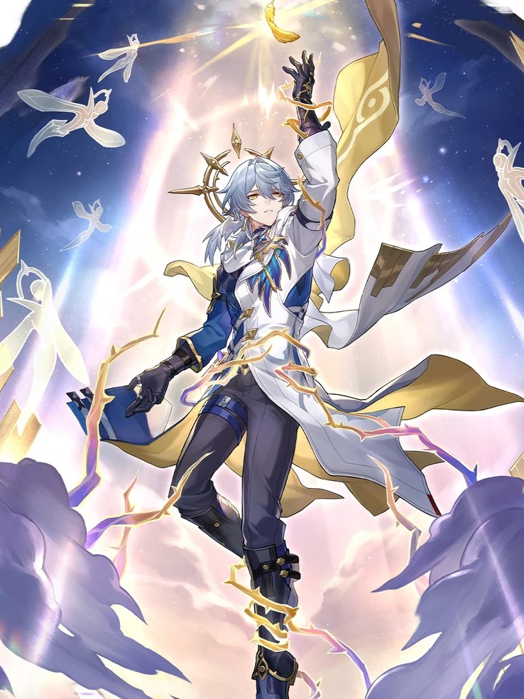
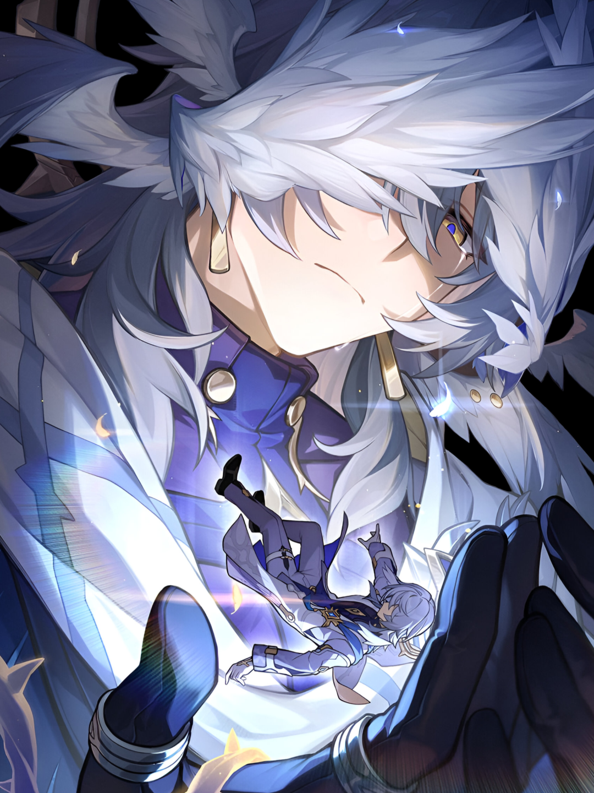
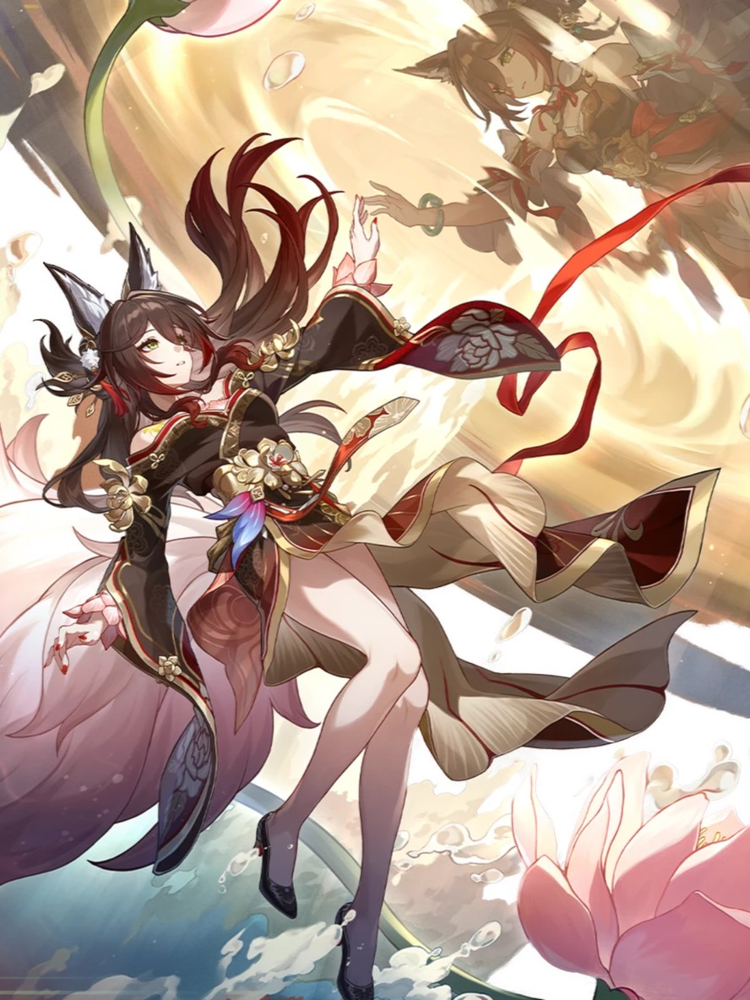
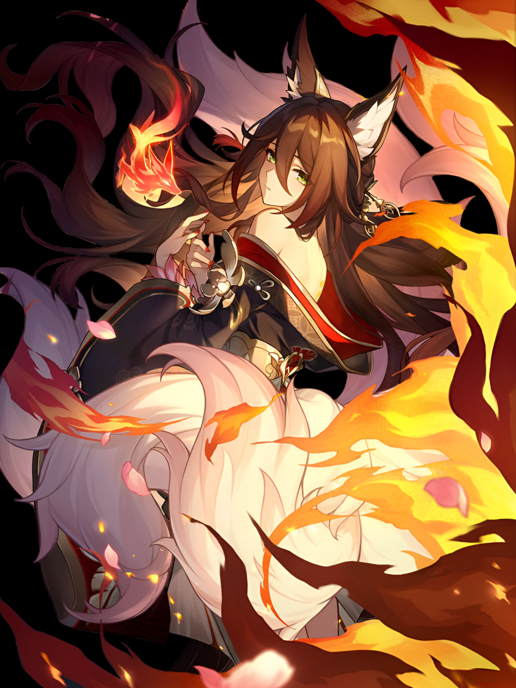

Sunday est le chef de la Maison Vieux-Chêne. Il est l'organisateur du festival Ôdiapason et représentant de la Famille de Penacony.
Sunday est le chef de la Maison Vieux-Chêne. Il est l'organisateur du festival Ôdiapason et représentant de la Famille de Penacony.
Le rêve de l'Ordre s'est dissipé, mais certains n'ont pas renoncé à leur intention première.
- Le voyageur à qui l'on a coupé les ailes... où ses pas le mèneront-ils ?

Départ renouvelé : Après avoir utilisé une compétence ou un Ultime sur un personnage allié, le porteur régénère 6 (8) points d'énergie et la cible reçoit 1 pile de « Hymne » pendant 2 tour(s), cumulable jusqu'à 3 fois.
Départ renouvelé : Après avoir utilisé une compétence ou un Ultime sur un personnage allié, le porteur régénère 6 (8) points d'énergie et la cible reçoit 1 pile de « Hymne » pendant 2 tour(s), cumulable jusqu'à 3 fois.
Chaque pile augmente les DMG infligés de 15% (24%).
Après chaque 2 utilisation(s) de la compétence ou de l'Ultime du porteur sur un personnage allié, récupère 1 point de compétence.

Une jeune fille renarde pleine de tact, dont l'apparence, le nom et l'identité ont été volés.
Une jeune fille renarde pleine de tact, dont l'apparence, le nom et l'identité ont été volés.
Le destin ne lui a laissé qu'une infime chance de survie, mais la marque de la Destruction se tord d'impatience.
Celle qui, dans une fugue, a connu la vie et la mort et s'est vu offrir une nouvelle vie... quand pourra-t-elle rentrer chez elle ?

Renaissance : Augmente l'effet de rupture du porteur de 60% (100%).